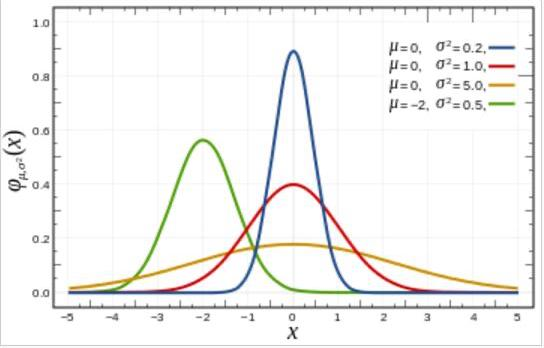
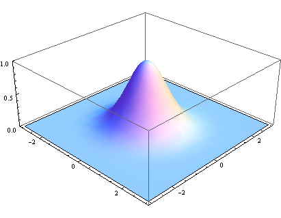

图像高斯模糊算法简介
我司的图片编解码服务承载了整个集团二十余个业务的图片处理功能。一种常见的业务需求就是对图像进行模糊处理。
近期，部分业务有对图像进行模糊处理的需求，因此大概学习了一下图像的模糊处理算法，记录如下。
我们知道，一幅图片由多个像素点组成。对图片进行模糊处理，本质上是对这些像素点找到一种「平滑」的算法，使得每个像素都被周围的像素平均化，从而损失一部分的精度。与此相反的是对图片做锐化处理，在此不做展开。
原理
较为常见的模糊处理算法是高斯模糊，一维的高斯函数形式为 $$ f(x)=\frac{1}{\sigma\sqrt{2\pi}}e^{-\frac{(x-\mu)^2}{2\sigma^2}} $$ 其中，$\sigma$ 为高斯标准差，$\mu$ 为 x 的均值。由于高斯函数的图像关于 $x=\mu$ 对称，因此可将图像中心移动到与 y 轴重合，即可令 $\mu=0$ ，因此 $f(x)=\frac{1}{\sigma\sqrt{2\pi}}e^{-\frac{x^2}{2\sigma^2}}$。如下图可看出，$\sigma$ 值越大，置信区间越集中。对应地，图像越陡峭。

由于图像是二维数据，因此我们需要二维的高斯函数，其形式为： $$ \begin{align} G(x,y)&=\frac{1}{\sigma\sqrt{2\pi}}e^{-\frac{x^2}{2\sigma^2}} \cdot \frac{1}{\sigma\sqrt{2\pi}}e^{-\frac{y^2}{2\sigma^2}}\\\ &=\frac{1}{2\pi\sigma^2}e^{-\frac{(x^2+y^2)}{2\sigma^2}} \end{align} $$ 对应图像为：

在图像的高斯模糊处理中，输入参数有 radius 和 sigma。radius 为对中心点周围半径为某一值以内的所有像素做平均处理，其值越大，中心像素越收到更多周围像素的影响，生成的图片越模糊。如下图所示，中心点像素原始值为 2，半径为 1 以内的周围像素值都为 1。

最容易想到的方法是对中心点周围的所有像素求平均值。但由于图片存在空间局部性原理，即越靠近中心点的像素，跟中心点的关系越密切。因此使用高斯函数进行加权平均是一种更合理的方法，越靠近中心点的像素权重越高，输入参数中的 sigma 就对应了高斯二维函数中的 $\sigma$，其值越大，高斯函数图像越平缓，离中心点越远的像素分配的权重越大，生成的图像越模糊。
效果
有如下一张图片：
给定 radius=5,sigma=10 得到的模糊图片如下：

【完】